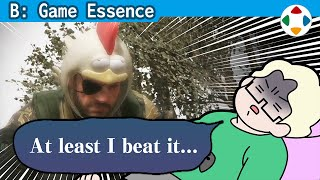
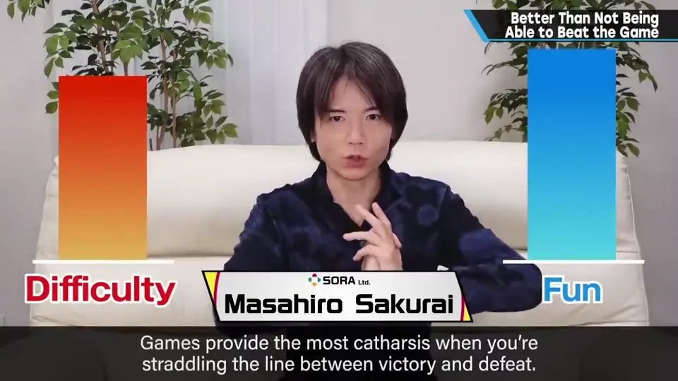
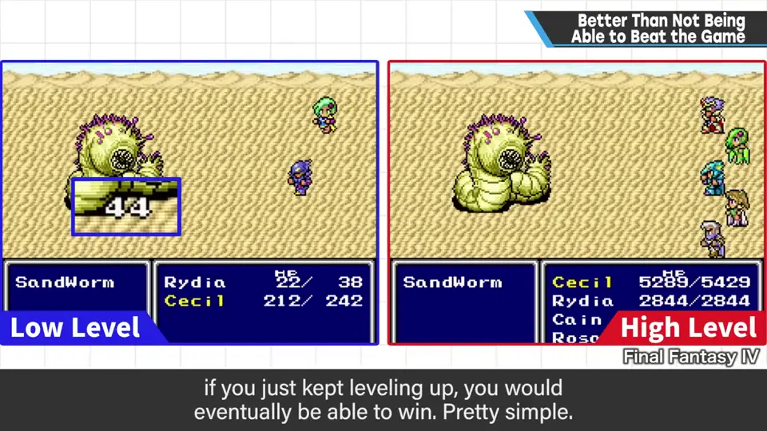
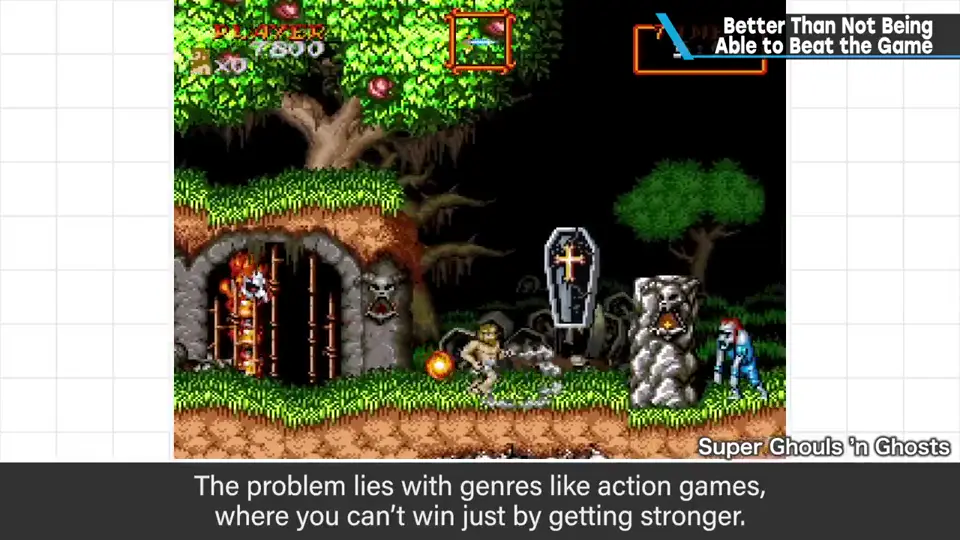
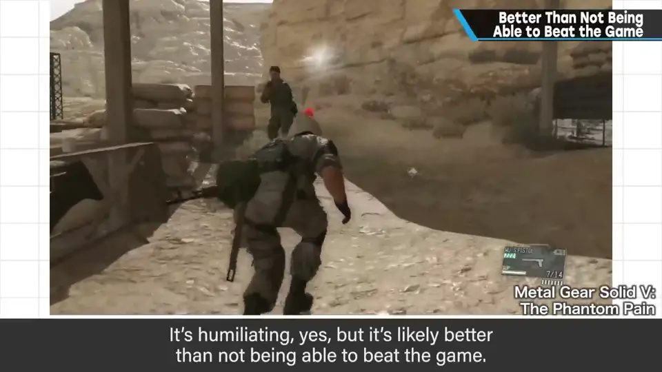
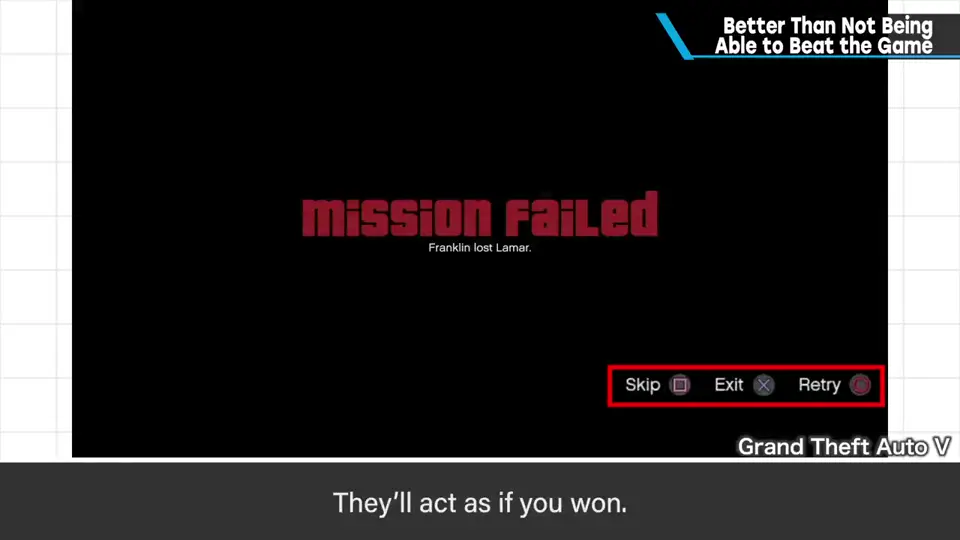
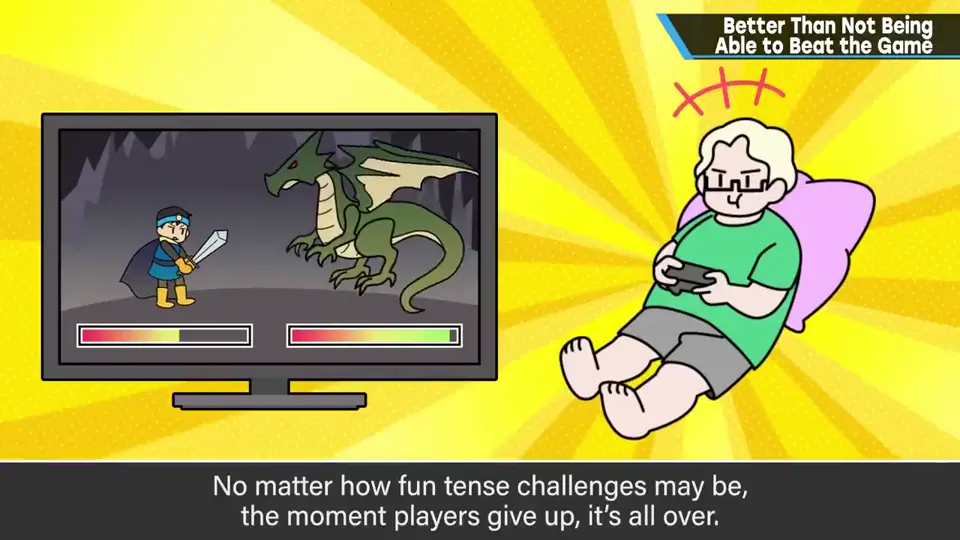
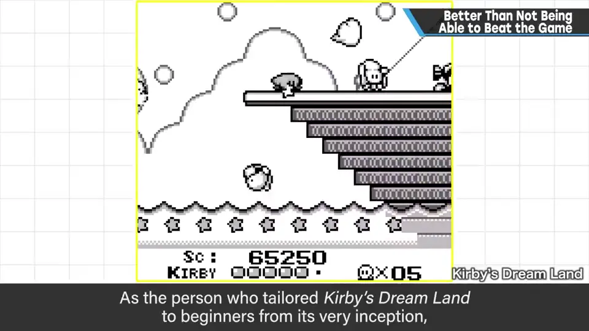
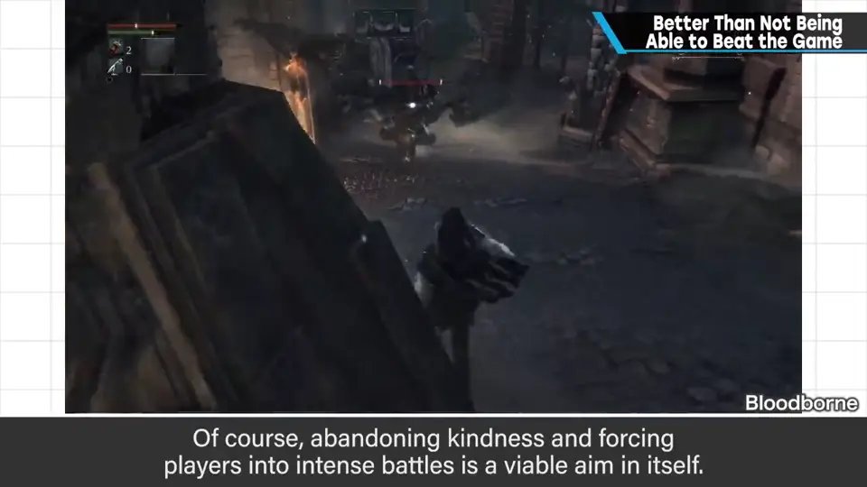

速览
游戏在胜负边缘能得到最高的宣泄感（catharsis），而且被设计成在整个游玩中都能感受到。但如果因为难度实在过不去——花了几十小时的游戏，最后的最后太难通不了关——这是无论如何都要避免的。传统 RPG 只要耐心升级总会有胜算，这是 RPG 曾经流行的根本；问题在于普通动作游戏等没有「靠强化」这条退路的游戏（部分模拟游戏也是）。期待玩家技术成长，过了某个程度也撑不住。有些游戏在连败后推荐降低难度，屈辱感很强，但总比通不了关好；也有可以跳过难关、当作已通关的游戏——即便损害了游戏根本的乐趣，也比卡住强。不能中途调整、只能从头再来的游戏，甚至可以说设计有问题。再怎么说极限博弈好玩，玩家中途放弃，到那里就毫无价值了。像以前那样紧张刺激的战斗也许不合时代，但这种很有游戏感的游戏也会大卖。从一开始就专门为初学者做《星之卡比》的樱井想对玩家温柔，但作为重度玩家，有时也想追求极限。结论：在不带屈辱感的范围内，给某种救济手段——光是能在游戏中改难度就差很多。当然，无视亲切、只提供刺激战斗也是一种概念，并会由此诞生名作；但别以为所有游戏玩家都会跟上。
1. 最糟的是打不通关 0:04
游戏在胜负的边缘能得到最高的宣泄感，而且被做成在整个游玩过程中都能感受到它。
但如果难度上怎么都过不去——花了几十小时的游戏，最后的最后太难无法通关——这是无论如何都要避免的。

- 传统 RPG 只要耐心升级，就会有胜算——简单，也是 RPG 曾经风靡的根本。
- 问题是普通动作游戏等没有靠强化逃离的退路的游戏；部分模拟游戏也是如此。
- 即使期待玩家的技术成长，到某个程度以上也承受不了。


2. 各种救济手段 0:52
- 有的游戏在连败后会建议降低难度：屈辱感相当高，但也许比通不了关好。
- 也有可以跳过难关、当作已经通关的游戏：这也比卡住强——即便损害了游戏根本的乐趣，也还是比通不了关好。
- 因为无法在中途调整，只能从头再来的游戏，甚至可以说设计上有问题。



3. 温柔与极限之间 1:35
像以前那样紧张刺激的战斗也许不合时代；但另一方面，这种「很有游戏感」的游戏也会成为大热门。
从一开始就专为初学者制作《星之卡比》的樱井想对玩家温柔；但作为重度玩家的自己，有时也想追求极限。分寸很难拿捏。


当然，无视亲切、只提供刺激战斗也是一种概念，并会由此诞生名作；但别以为不管哪款游戏，玩家都会跟上。
自测题
1. 为什么动作游戏比传统 RPG 更容易出现「打不通关」？
RPG 可以耐心升级获得胜算；动作游戏等没有靠强化逃离的退路，而玩家技术的成长到某个程度就撑不住。 0:35
2. 樱井如何看待「建议降难度」或「跳过关卡」？
屈辱感高、甚至损害根本乐趣，但都比通不了关好；不能中途调整、只能从头再来的游戏甚至可说设计有问题。 0:52
3. 樱井的结论是什么？
在不带屈辱感的范围内提供某种救济手段，例如能在游戏中途改变难度；无视亲切的硬核概念也可以，但别以为所有玩家都会跟上。 2:08